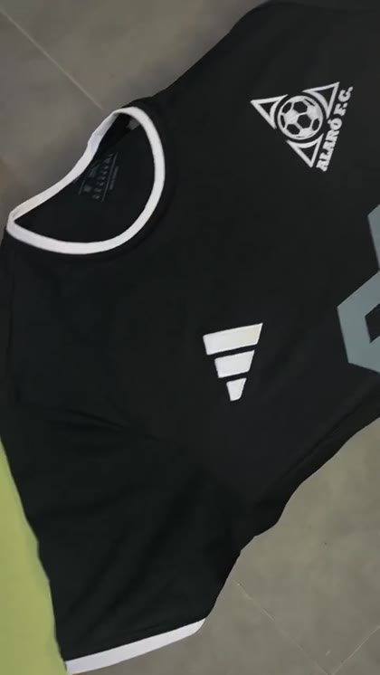
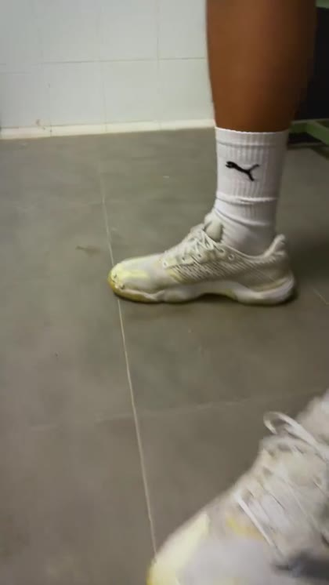
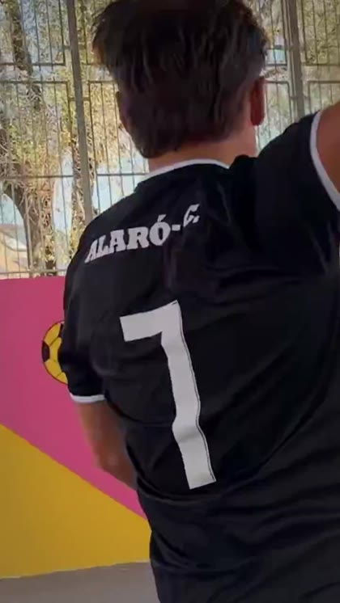

01 / VÍDEO / SOCIAL
Alaró Balonmano
Tráiler vertical · 39 s
Grabación, edición completa y diseño sonoro para presentar la energía del equipo en una pieza breve para móvil.
Ver proceso y mi papel
Una presentación del equipo en 39 segundos
El proyecto consistía en condensar la energía de Alaró Balonmano en un vídeo vertical breve. Me encargué de la grabación, la edición completa y el diseño sonoro, con un enfoque de tráiler deportivo.
- Mi papel
- Grabación · Edición completa · Diseño sonoro
- Enfoque
- Imagen y sonido trabajan juntos para dar ritmo a la presentación del equipo en un formato pensado para móvil.
- Entrega
- Vídeo vertical de 39 segundos.


